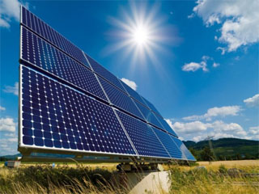
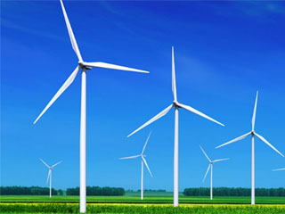
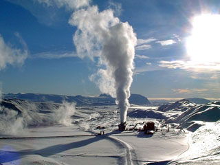
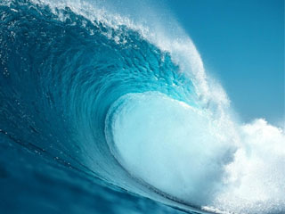
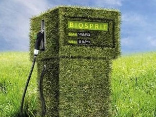

Cонячна енергетика
Cонячна енергетика – використовує енергію сонячного випромінювання, перетворюючи його з використанням термодинамічного або фотоелектричного методу. Фотоелектричний метод забезпечує пряме перетворення сонячної радіації в електрику. Фототермічний метод заснований на перетворенні сонячної енергії в теплову, яка може бути використана як для генерації електрики, так і для обігріву приміщень, гарячого водопостачання тощо.
Вітрова енергетика
Вітроенерге́тика — галузь відновлюваної енергетики, яка спеціалізується на використанні кінетичної енергії вітру. Вітер як джерело енергії є непрямою формою сонячної енергії, і тому належить до відновлюваних джерел енергії. Використання енергії вітру є одним із найдавніших відомих способів використання енергії із навколишнього середовища, і було відоме ще в давні часи.
Геотермальна енергія
Вираз «геотермальна енергетика» буквально означає, що це енергія тепла Землі («гео» – земля, «термальна» – теплова). Основним джерелом цієї енергії слугує постійний потік теплоти з розжарених надр, направлений до поверхні Землі. Земна кора отримує теплоту в результаті тертя ядра, радіоактивного розпаду елементів (подібно торію і урану), хімічних реакцій. Постійні часу цих процесів настільки великі відносно часу існування Землі, що неможливо оцінити, збільшується чи зменшується її температура.
Енергія хвиль
Всі ми спостерігали за тим, як хвилі б'ють у берег, як на них гойдаються красені морські лайнери, читали або бачили у фільмах, як могутні цунамі спустошують все навколо. Хвилі мають величезну енергію, яку людям потрібно навчитися використовувати. І такі спроби вже зроблено. У Норвегії побудовано 500-кіловатну хвильову енергетичну установку. Менші за потужністю хвильові установки забезпечують енергією бакени і маяки, що вказують напрямок руху кораблям. Попри величезні запаси енергії хвиль, цей напрямок розвивається досить повільно через велику кількість технічних проблем, з якими пов'язане перетворення енергії хвиль в електричну. Основними з них є розосередження енергії на великій поверхні, непостійне хвилевідтворення, низька швидкість руху хвиль при значній силі їх¬ньої дії. Більш поширеним є використання енергії припливів. Припливні коливання рівня всесвіт¬нього океану пов'язані з гравітаційним впливом Місяця на водні маси Землі. Двічі на добу рівень світового океану піднімається і опускається.
Біо паливо
Біопа́ливо або біологічне паливо — органічні матеріали, як-от деревина, відходи та спирти, які використовуються для виробництва енергії. Це — поновлюване джерело енергії, на відміну від інших природних ресурсів, таких як нафта, вугілля й ядерне паливо. Офіційне визначення біопалива — будь-яке паливо, яке містить (за об'ємом) не менш ніж 80 % матеріалів, отриманих від живих організмів, зібраних у межах десяти років перед виробництвом. Подібно до вугілля й нафти, біомаса — це форма збереженої сонячної енергії. Енергія сонця «захоплюється» через процес фотосинтезу під час росту рослин. Одна перевага біологічного палива в порівнянні з іншими типами палива — те, що воно повністю розкладається мікроорганізмами, і тому відносно безвинне для довкілля.